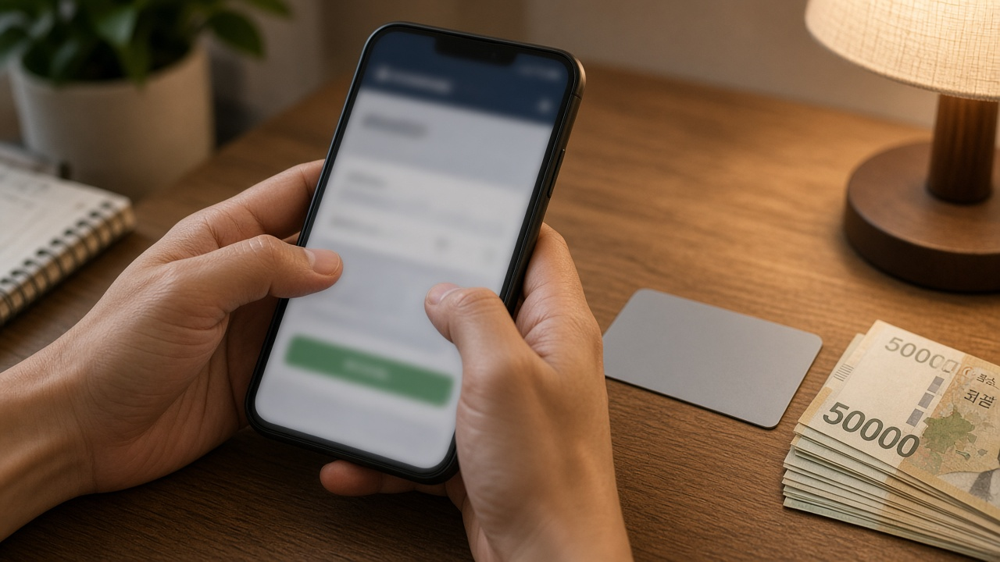

보증금 맡기면 신용카드 발급, 신한카드와 우리카드 대상은 신용점수 낮은 사람이 아니라 점수가 아예 안 나오는 사람이에요
사회초년생이 첫 신용카드를 신청했다가 금융거래 기록이 부족하다는 이유로 발급이 어렵다는 안내를 받는 경우가 꽤 많아요.
소득이 있어도 카드나 대출을 써 본 기록이 없으면 카드사가 신용을 판단할 근거가 없기 때문이에요.
그런데 10월 21일 금융위원회가 보증금을 맡기면 비대면으로 신용카드를 발급해 주는 서비스를 허용하면서, 나도 받을 수 있는지 궁금해하는 분들이 늘었어요.
오늘은 이 서비스가 정확히 누구를 위한 것인지, 지금 바로 신청할 수 있는지, 상품이 나오면 무엇을 확인해야 하는지 차근차근 정리해 볼게요.
금융위원회가 10월 21일 신한카드와 우리카드 보증금 카드를 허용했어요
금융위원회는 10월 21일 정례회의에서 신한카드의 보증금 기반 비대면 신용카드 발급 서비스와 우리카드의 외국인 고객 보증금 기반 신용카드 발급 서비스를 혁신금융서비스로 새로 지정했어요.
혁신금융서비스는 기존 규제로는 어려운 서비스를 일정 기간 특례로 시험해 볼 수 있게 허용하는 제도예요.
지금까지는 신용 기록이 부족한 사람이 신용카드를 만들려면 은행 영업점에 직접 가서 예금을 담보로 잡히는 질권 설정 절차를 거쳐야 했어요.
이번 특례로 은행 방문 없이 카드사에 보증금을 내는 방식으로 대신할 수 있게 된 거예요.
금융위원회는 이렇게 카드를 쓰면서 초기 신용거래 기록을 쌓고, 나중에 제도권 금융상품을 이용하기 쉬워지는 효과를 기대한다고 밝혔어요.

신용점수가 낮은 사람과 점수가 안 나오는 사람은 달라요
여기가 가장 많이 헷갈리는 부분이에요.
금융위원회는 두 카드사 모두 발급 대상을 금융 이력이 부족해서 개인신용평점을 확인할 수 없는 사람으로 한정하도록 조건을 붙였어요.
그러니까 이미 신용점수가 나오는데 점수가 낮아서 카드 발급이 거절된 분은 이 특례 대상에 해당하지 않을 수 있어요.
또 청년이라는 이유만으로 대상이 되는 것도 아니에요. 공식 자료에 따로 정해진 나이 기준은 없고, 핵심은 신용 기록이 없어 평점 자체가 확인되지 않는지 여부예요.
흔히 씬파일러라고 부르는, 카드나 대출을 써 본 기록이 거의 없는 사회초년생이나 주부, 국내에 온 지 얼마 안 된 외국인이 주로 떠올릴 수 있는 대상이에요.
신한카드와 우리카드는 방식과 대상이 조금 달라요
신한카드 서비스는 온라인 플랫폼에서 카드를 신청한 뒤, 선불전자지급수단의 송금 기능으로 카드사에 보증금을 보내면 그 보증금을 바탕으로 신용카드를 발급하는 구조예요.
선불전자지급수단은 흔히 쓰는 간편결제 충전금 같은 것을 말하는데, 여기서는 보증금을 보내는 통로로만 쓰여요. 발급되는 카드는 선불카드가 아니라 신용카드예요.
우리카드 서비스는 국내에 거주하는 외국인 가운데 금융 이력이 부족한 고객을 대상으로 해요. 그래서 한국인 사회초년생이라면 우리카드의 이번 서비스는 해당하지 않는다고 보는 게 맞아요.
두 카드사 모두 받은 보증금을 회사 자기 재산과 분리해서 관리해야 한다는 조건도 붙었어요. 카드사가 보증금을 사실상 예금처럼 모아 자금을 마련하는 데 쓰지 못하게 하려는 장치예요.
지금 바로 신청할 수 있는 건 아니에요
특례 지정은 서비스를 시험해도 된다는 허가이지, 오늘부터 앱에서 신청할 수 있다는 뜻은 아니에요.
11월 4일 기준으로 금융위원회 발표 자료에는 실제 출시일, 최소 보증금, 보증금 대비 이용한도, 연회비, 보증금 반환 시점이 나와 있지 않아요.
금융위원회는 하반기 업무보고에서 12월부터 금융 이력이 부족한 청년과 외국인도 신용카드를 더 쉽게 발급받을 수 있도록 보증금 담보 신용카드 제도를 도입하겠다고 밝힌 바 있어요.
그러니 정확한 신청 시작은 신한카드와 우리카드 공식 홈페이지나 공식 앱의 출시 공지를 기다려 확인하는 게 가장 안전해요.
출시 전에 사전 접수나 보증금 먼저 입금, 카드 발급 대행을 내세우는 문자나 메신저 연락이 오면 돈이나 신분증 사본을 보내지 않는 게 좋아요.
상품이 나오면 이 다섯 가지를 먼저 확인해 보세요
첫 번째는 내가 대상인지예요. 신용평점 확인 불가를 어떤 방식으로 판단하는지, 어떤 서류가 필요한지 상품설명서에서 확인해 보세요.
두 번째는 보증금 금액과 이용한도의 관계예요. 맡긴 돈만큼 쓸 수 있는지, 그보다 적은지에 따라 실제 쓸모가 달라져요.
세 번째는 보증금을 언제 어떻게 돌려받는지예요. 카드를 해지하거나 일반 카드로 바뀔 때 돌려받는 시점과 조건을 꼭 봐 두세요.
네 번째는 연체했을 때 보증금에서 바로 빠져나가는지, 연체 기록은 어떻게 남는지예요. 보증금이 있어도 연체는 신용 기록에 불리하게 작용할 수 있어요.
다섯 번째는 연회비와 수수료, 할부나 현금서비스 이용 가능 여부예요.
그리고 보증금으로 묶이는 돈은 당분간 생활비로 쓸 수 없으니, 매달 결제할 돈과 따로 계산해 두는 게 좋아요.
오늘 내용은 11월 4일 기준 금융위원회 발표와 보도를 정리한 일반 정보이고 특정 카드 상품을 권하는 글이 아니에요. 발급 승인이나 신용점수 상승을 보장하는 내용도 아니니, 최종 조건은 카드사 공식 안내로 꼭 한 번 더 확인해 주세요.
참고 자료 금융위원회 2026년 10월 21일 혁신금융서비스 4건 신규 지정 보도자료, 파이낸셜뉴스와 뉴스1 2026년 10월 21일 보도, 한국일보 2026년 10월 21일 보도, 헤럴드경제 금융위원회 하반기 업무보고 보도
태그 보증금신용카드 신용카드발급 씬파일러 사회초년생신용카드 신한카드 우리카드 외국인신용카드 신용점수 금융위원회 혁신금융서비스